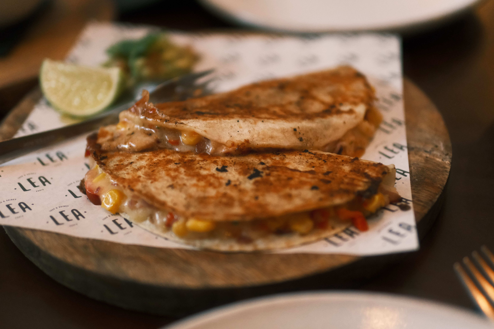

Quesadilla

Ingredients
- Large flour tortillas - 2
- Cheddar cheese - 120 grams, grated
- Bell pepper - 1/2, sliced
- Red onion - 1/4, sliced
- Cooked chicken - 100 grams, chopped
- Olive oil - 1 tsp
Steps
- Heat a frying pan over medium heat
- Place one tortilla in the pan
- Spread the grated cheese over the tortilla
- Add the chicken, bell pepper and red onion
- Place the second tortilla on top
- Cook for 2 to 3 minutes until the bottom is golden
- Flip the quesadilla and cook the other side for 2 to 3 minutes
- Remove from the pan, slice into pieces and serve
Home